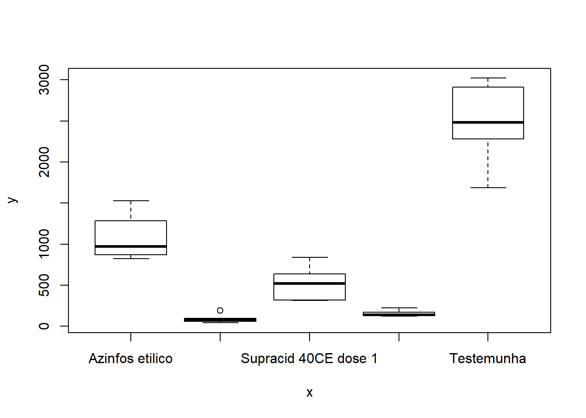
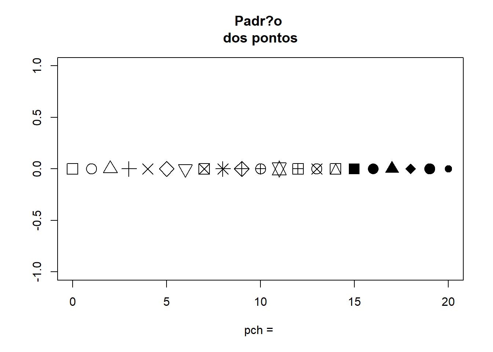
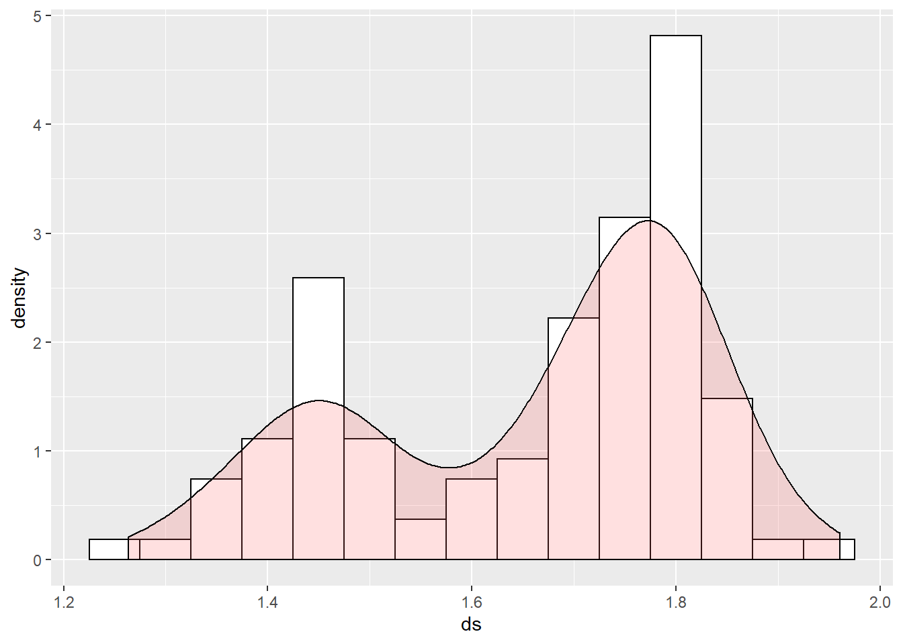
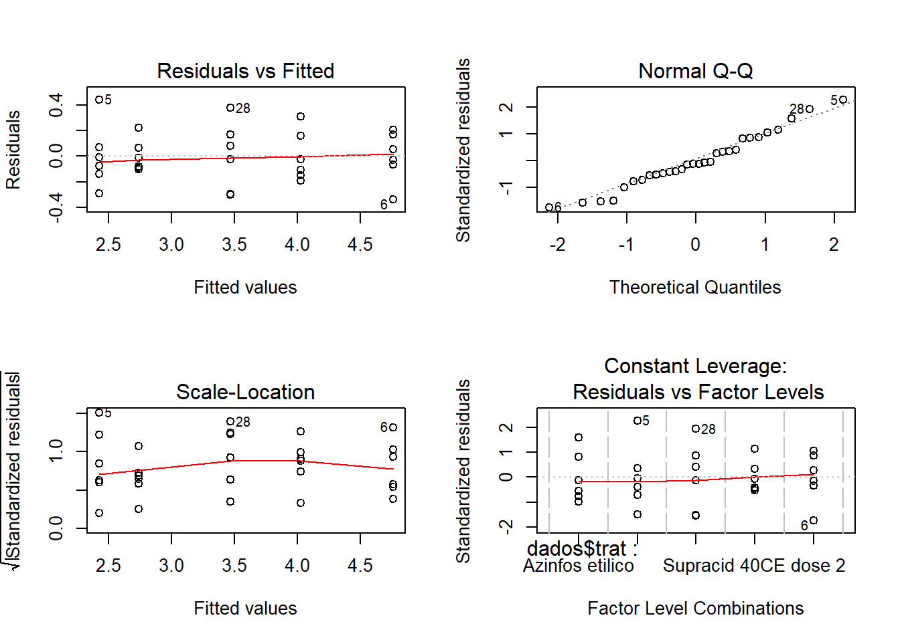
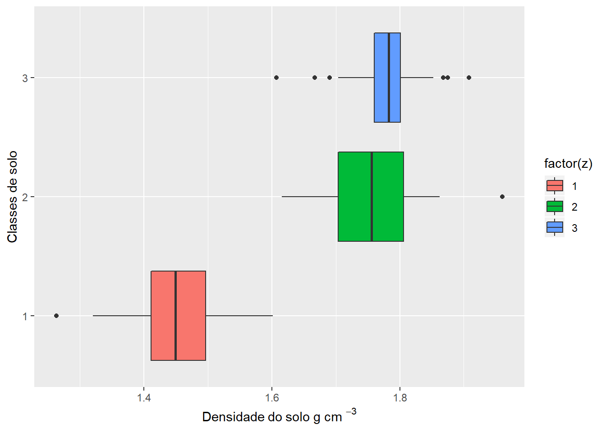

Capitulo 8 Análide de variância (ANOVA)
Estudos estatísticos contemporâneos contemplam a análise de variância tendo em vista que este procedimento permite identificar e quantificar as variações ocorridas em um experimento, discriminando a parte da variação associada ao modelo pelo qual o experimento foi procedido da variação que se dá devido ao acaso. No R encontram-se diversos procedimentos para se executar a ANOVA. A tabela abaixo mostra alguns modelos e suas usuais formulações:
| Modelo | Fórmula | Comentário |
|---|---|---|
| DIC | y~t | t é um fator |
| DBC | y~t+b | t e b são fatores |
| DQL | y~t+l+c | t, l e c são fatores |
| Fatorial/ DIC | y~N*P | igual a N + P + N:P |
| Fatorial/ DBC | y~b+N*P | igual a b+N+P+N:P |
| Regressão linear simples | y~x | x é uma variável exploratória |
| Regressão quadrática | y~x+x2 | x2 é um objeto x2<-x^2 |
Os modelos de análise de variância simples podem ser trabalhados também a partir da função lm() simplesmente indicando um fator como variável independente. No entanto, existem outras funções que também realizam análises de variância para casos específicos (como a aov() para amostras balanceadas) ou modelos lineares mais complexos como análise de modelos mistos ou hierarquicas função lme() do pacote nlme e modelos não lineares nls() e glm() para ANOVA, com estrutura de erros especificada.
8.1 Delineamento inteiramente casualizado
O delineamento inteiramente casualizado é o mais simples de todos os delineamentos experimentais.
Este delineamento apresenta as seguintes caracterítiscas:
Utiliza apenas os princópios da repetição e da casualização, deixando de lado o principio do controle local, e, portanto, as repetições não são organizadas em blocos;
Os tratamentos são designados às parcelas de forma inteiramente casual, com números iguais ou diferentes repetições por tratamento.
Vantagens em relações a outros delineamentos
- é um delineamento bastante flexível, visto que o número de tratamentos e de repetições depende apenas do número de parcelas disponíveis;
- o número de repetições pode ser diferente de um tratamento para outro;
- a análise estatística é simples, mesmo quando o número de repetições por tratamento é variável;
- o número de grau de liberdade para o resíduo é o maior possível;
Desvantagens em relações a outros delineamentos
- exige homogeneidade total das condições experimentais;
- pode conduzir a uma estimativa de variância residual bastante alta, uma vez que, não se aplica o controle local;
Este delineamento é mais utilizado em experimentos de laboratório e nos ensaios com vasos, realizados dentro de casas de vegetação, nos quais as condições experimentais podem ser controladas. Nos experimentos realizados com vasos, estes devem ser cte mudados de posição, de forma interamente casual.
8.1.1 Análise de experimento em DIC
Dados de um experimento visando controle de pulgão (Aphis gossypii Glover) em cultura de pepino, instalado em delineamento inteiramente casualizado com 6 repetições. A resposta observada foi o número de pulgões após a aplicação de produtos indicados para seu controle. O primeiro passo é ler os dados.
Importando dados
Conferir se temos fatores para fazer a análise de variância
## 'data.frame': 30 obs. of 3 variables:
## $ trat : Factor w/ 5 levels "Azinfos etilico",..: 5 1 3 4 2 5 1 3 4 2 ...
## $ rept : int 1 1 1 1 1 2 2 2 2 2 ...
## $ pulgoes: int 2370 1282 562 173 193 1687 1527 321 127 71 ...Lembramos que pulgoes deve ter conteudo numerico e trat deve ser fator
Verificação gráfica** É importante notar que as barras simplesmente refletem a variância dos dados dentro da cada tratamento e não são adequadas para detectar diferenças entre tratamentos.

8.1.2 Análise de variância
Fazendo a análise de variância
## Analysis of Variance Table
##
## Response: dados$pulgoes
## Df Sum Sq Mean Sq F value Pr(>F)
## dados$trat 4 23145259 5786315 81.79 5.505e-14 ***
## Residuals 25 1768644 70746
## ---
## Signif. codes: 0 '***' 0.001 '**' 0.01 '*' 0.05 '.' 0.1 ' ' 1Extraindo o coeficiente de variação
## Loading required package: agricolae## [1] 30.73619Análise gráfica dos resíduos

Analisando a Figura acima sugere que o principal problema deste conjunto de dados pode ser a heterosdasticidade. A variabilidade dos erros apresentam um forma de cone.
Teste das pressuposições da análise de variância**
##
## Bartlett test of homogeneity of variances
##
## data: m0$res and dados$trat
## Bartlett's K-squared = 29.586, df = 4, p-value = 5.942e-06Como observamos uma significancia estatística neste resultado, devemos rejeitar a hipótese nula de que as variâncias sejam as mesma em todos os níveis do fator.
Teste de Shapiro-Wilk para Normalidade
##
## Shapiro-Wilk normality test
##
## data: m0$res
## W = 0.89608, p-value = 0.0067428.1.3 Transformação de dados
Tranformação de dados é uma das possíveis formas de contarnar o problema de dados que não obedecem os pressupostos da análise de variância. Vamos ver como isto poder ser feito com o programa R.
Nos resultados acima vemos que a homogeneidade de variâncias foi rejeitada. Para tentar contornar o problema podemos utilizar catalogos de transformação:
Transformação de raiz quadrada: frequentemente utilizada para dados de contagens, que geralmente seguem a distribuição de Poison, na qual a média é igual a variância. Quando ocorrem zeros ou valores baixos (menores que 10 ou 15), as transformação recomendadas são raiz quadrada + 0,5 ou 1,0.
Transformação angular: recomendavel para dados expressos em porcentagens, que geralmente segue distribuição binomial.
Transformação logarítima: utilizada quando é constatada certa proporcionalidade entre as médias e os desvios padrões dos diversos tratamentos.
8.1.3.1 Transformação de dados BOX-COX
Para tentar contornar o problema vamos usar a transformação Box-Cox, que consiste em transformar os dados de acordo com uma expressão.
A função boxcox() do pacote MASS calcula a verossimilhança perfilhada do parâmetro. Devemos escolher o valor que maximiza esta função. Nos comandos a seguir começamos carregando o pacote MASS e depois obtemos o gráfico da verossimilhança perfilhada. Como estamos interessados no máximo fazermos um novo gráfico com um zoom na região de interesse
## Loading required package: MASS


8.1.3.2 Análise de variância - Ajuste com a variável transformada.
análise gráfica dos resíduos

Os pressupostos foram atendindos
Teste de Shapiro-Wilk para Normalidade
##
## Shapiro-Wilk normality test
##
## data: m1$res
## W = 0.97288, p-value = 0.6207Teste de Bartllet para homocedasticidade
##
## Bartlett test of homogeneity of variances
##
## data: m1$res and dados$trat
## Bartlett's K-squared = 2.7641, df = 4, p-value = 0.598Resumo do modelo ajustado - Contraste
##
## Call:
## lm(formula = dados$pulgoes^0.2 ~ dados$trat, data = dados)
##
## Residuals:
## Min 1Q Median 3Q Max
## -0.33971 -0.10602 -0.02286 0.14069 0.44317
##
## Coefficients:
## Estimate Std. Error t value Pr(>|t|)
## (Intercept) 4.02268 0.08709 46.191 < 2e-16 ***
## dados$tratDiazinon 60CE -1.60093 0.12316 -12.999 1.27e-12 ***
## dados$tratSupracid 40CE dose 1 -0.55418 0.12316 -4.500 0.000136 ***
## dados$tratSupracid 40CE dose 2 -1.28606 0.12316 -10.442 1.33e-10 ***
## dados$tratTestemunha 0.73703 0.12316 5.984 3.00e-06 ***
## ---
## Signif. codes: 0 '***' 0.001 '**' 0.01 '*' 0.05 '.' 0.1 ' ' 1
##
## Residual standard error: 0.2133 on 25 degrees of freedom
## Multiple R-squared: 0.95, Adjusted R-squared: 0.942
## F-statistic: 118.8 on 4 and 25 DF, p-value: 6.978e-16Resumo do modelo ajustado - Contraste em relação a testemunha
##
## Call:
## lm(formula = dados$pulgoes^0.2 ~ dados$trat, data = dados)
##
## Residuals:
## Min 1Q Median 3Q Max
## -0.33971 -0.10602 -0.02286 0.14069 0.44317
##
## Coefficients:
## Estimate Std. Error t value Pr(>|t|)
## (Intercept) 4.75972 0.08709 54.654 < 2e-16 ***
## dados$tratAzinfos etilico -0.73703 0.12316 -5.984 3.00e-06 ***
## dados$tratDiazinon 60CE -2.33797 0.12316 -18.983 2.31e-16 ***
## dados$tratSupracid 40CE dose 1 -1.29122 0.12316 -10.484 1.23e-10 ***
## dados$tratSupracid 40CE dose 2 -2.02310 0.12316 -16.426 6.62e-15 ***
## ---
## Signif. codes: 0 '***' 0.001 '**' 0.01 '*' 0.05 '.' 0.1 ' ' 1
##
## Residual standard error: 0.2133 on 25 degrees of freedom
## Multiple R-squared: 0.95, Adjusted R-squared: 0.942
## F-statistic: 118.8 on 4 and 25 DF, p-value: 6.978e-168.1.4 Aplicando teste de Tukey para comparar médias
No R, o teste de Tukey é apresentado através de intervalos de confiança. A interpretação é: se o intervalo de confiança para a diferença entre duas médias não incluir o valor zero, significa que se rejeita a hipótese nula, caso contrário, não se rejeita. O resultado pode ser visto através de uma tabela e/ou graficamente:
## Tukey multiple comparisons of means
## 95% family-wise confidence level
##
## Fit: aov(formula = dados$pulgoes^0.2 ~ dados$trat, data = dados)
##
## $`dados$trat`
## diff lwr upr
## Azinfos etilico-Testemunha -0.7370340 -1.09874544 -0.3753225
## Diazinon 60CE-Testemunha -2.3379681 -2.69967961 -1.9762567
## Supracid 40CE dose 1-Testemunha -1.2912155 -1.65292701 -0.9295041
## Supracid 40CE dose 2-Testemunha -2.0230984 -2.38480982 -1.6613869
## Diazinon 60CE-Azinfos etilico -1.6009342 -1.96264562 -1.2392227
## Supracid 40CE dose 1-Azinfos etilico -0.5541816 -0.91589302 -0.1924701
## Supracid 40CE dose 2-Azinfos etilico -1.2860644 -1.64777584 -0.9243529
## Supracid 40CE dose 1-Diazinon 60CE 1.0467526 0.68504114 1.4084641
## Supracid 40CE dose 2-Diazinon 60CE 0.3148698 -0.04684168 0.6765812
## Supracid 40CE dose 2-Supracid 40CE dose 1 -0.7318828 -1.09359428 -0.3701714
## p adj
## Azinfos etilico-Testemunha 0.0000277
## Diazinon 60CE-Testemunha 0.0000000
## Supracid 40CE dose 1-Testemunha 0.0000000
## Supracid 40CE dose 2-Testemunha 0.0000000
## Diazinon 60CE-Azinfos etilico 0.0000000
## Supracid 40CE dose 1-Azinfos etilico 0.0011809
## Supracid 40CE dose 2-Azinfos etilico 0.0000000
## Supracid 40CE dose 1-Diazinon 60CE 0.0000001
## Supracid 40CE dose 2-Diazinon 60CE 0.1099096
## Supracid 40CE dose 2-Supracid 40CE dose 1 0.0000307
Teste Tukey com pacote Agricolae
## Df Sum Sq Mean Sq F value Pr(>F)
## dados$trat 4 21.629 5.407 118.8 6.98e-16 ***
## Residuals 25 1.138 0.046
## ---
## Signif. codes: 0 '***' 0.001 '**' 0.01 '*' 0.05 '.' 0.1 ' ' 1tu <- HSD.test(y = dados$pulgoes^0.2,
trt = dados$trat,
MSerror = deviance(m1)/df.residual(m1), #quadrado m?dio do residuo
DFerror = df.residual(m1),
console = T)##
## Study: dados$pulgoes^0.2 ~ dados$trat
##
## HSD Test for dados$pulgoes^0.2
##
## Mean Square Error: 0.04550677
##
## dados$trat, means
##
## dados.pulgoes.0.2 std r Min Max
## Azinfos etilico 4.022682 0.1967278 6 3.830812 4.332792
## Diazinon 60CE 2.421748 0.2492525 6 2.131526 2.864913
## Supracid 40CE dose 1 3.468500 0.2678917 6 3.163821 3.846471
## Supracid 40CE dose 2 2.736617 0.1264052 6 2.634879 2.959410
## Testemunha 4.759716 0.1973855 6 4.420008 4.965939
##
## Alpha: 0.05 ; DF Error: 25
## Critical Value of Studentized Range: 4.153363
##
## Minimun Significant Difference: 0.3617115
##
## Treatments with the same letter are not significantly different.
##
## dados$pulgoes^0.2 groups
## Testemunha 4.759716 a
## Azinfos etilico 4.022682 b
## Supracid 40CE dose 1 3.468500 c
## Supracid 40CE dose 2 2.736617 d
## Diazinon 60CE 2.421748 d## List of 5
## $ statistics:'data.frame': 1 obs. of 5 variables:
## ..$ MSerror: num 0.0455
## ..$ Df : int 25
## ..$ Mean : num 3.48
## ..$ CV : num 6.13
## ..$ MSD : num 0.362
## $ parameters:'data.frame': 1 obs. of 5 variables:
## ..$ test : Factor w/ 1 level "Tukey": 1
## ..$ name.t : Factor w/ 1 level "dados$trat": 1
## ..$ ntr : int 5
## ..$ StudentizedRange: num 4.15
## ..$ alpha : num 0.05
## $ means :'data.frame': 5 obs. of 8 variables:
## ..$ dados$pulgoes^0.2: num [1:5] 4.02 2.42 3.47 2.74 4.76
## ..$ std : num [1:5] 0.197 0.249 0.268 0.126 0.197
## ..$ r : int [1:5] 6 6 6 6 6
## ..$ Min : num [1:5] 3.83 2.13 3.16 2.63 4.42
## ..$ Max : num [1:5] 4.33 2.86 3.85 2.96 4.97
## ..$ Q25 : num [1:5] 3.88 2.3 3.24 2.65 4.7
## ..$ Q50 : num [1:5] 3.96 2.38 3.5 2.69 4.77
## ..$ Q75 : num [1:5] 4.14 2.47 3.61 2.78 4.9
## $ comparison: NULL
## $ groups :'data.frame': 5 obs. of 2 variables:
## ..$ dados$pulgoes^0.2: num [1:5] 4.76 4.02 3.47 2.74 2.42
## ..$ groups : Factor w/ 4 levels "a","b","c","d": 1 2 3 4 4
## - attr(*, "class")= chr "group"## dados$pulgoes^0.2 groups
## Testemunha 4.759716 a
## Azinfos etilico 4.022682 b
## Supracid 40CE dose 1 3.468500 c
## Supracid 40CE dose 2 2.736617 d
## Diazinon 60CE 2.421748 d8.1.5 Aplicando teste para agrupar médias
carregando a biblioteca necessária
## Loading required package: laercioTeste de Duncan
##
## DUNCAN TEST TO COMPARE MEANS
##
## Confidence Level: 0.95
## Dependent Variable: dados$pulgoes^0.2
## Variation Coefficient: 6.126714 %
##
##
## Independent Variable: dados$trat
## Factors Means
## Testemunha 4.75971565312899 a
## Azinfos etilico 4.02268167030532 b
## Supracid 40CE dose 1 3.46850010815533 c
## Supracid 40CE dose 2 2.73661729164913 d
## Diazinon 60CE 2.42174750727391 e##
## TUKEY TEST TO COMPARE MEANS
##
## Confidence level: 0.95
## Dependent variable: dados$pulgoes^0.2
## Variation Coefficient: 6.126714 %
##
## Independent variable: dados$trat
## Factors Means
## Testemunha 4.75971565312899 a
## Azinfos etilico 4.02268167030532 b
## Supracid 40CE dose 1 3.46850010815533 c
## Supracid 40CE dose 2 2.73661729164913 d
## Diazinon 60CE 2.42174750727391 d
##
## Compração via Scott-Knott
## Loading required package: ScottKnottattach(dados)
dados1.SK<- SK(trat,pulgoes, model='pulgoes^0.2 ~ trat', which='trat',error='Within',sig.level=0.05)
summary(dados1.SK)## Levels Means SK(5%)
## Testemunha 4.759716 a
## Azinfos etilico 4.022682 b
## Supracid 40CE dose 1 3.468500 c
## Supracid 40CE dose 2 2.736617 d
## Diazinon 60CE 2.421748 ePacote para analise de experimentos
##
## Attaching package: 'ExpDes.pt'## The following object is masked from 'package:MASS':
##
## ginv## The following objects are masked from 'package:agricolae':
##
## lastC, order.group, tapply.stat## The following object is masked from 'package:stats':
##
## ccfConhecer o pacote
## [1] "anscombetukey" "bartlett" "ccboot" "ccf"
## [5] "dbc" "dic" "dql" "duncan"
## [9] "faixas" "fat2.ad.dbc" "fat2.ad.dic" "fat2.dbc"
## [13] "fat2.dic" "fat3.ad.dbc" "fat3.ad.dic" "fat3.dbc"
## [17] "fat3.dic" "ginv" "graficos" "han"
## [21] "lastC" "layard" "levene" "lsd"
## [25] "lsdb" "oneilldbc" "oneillmathews" "order.group"
## [29] "order.stat.SNK" "plotres" "psub2.dbc" "psub2.dic"
## [33] "reg.nl" "reg.poly" "samiuddin" "scottknott"
## [37] "snk" "tapply.stat" "tukey"## ------------------------------------------------------------------------
## Quadro da analise de variancia
## ------------------------------------------------------------------------
## GL SQ QM Fc Pr>Fc
## Tratamento 4 21.6288 5.4072 118.82 6.9784e-16
## Residuo 25 1.1377 0.0455
## Total 29 22.7665
## ------------------------------------------------------------------------
## CV = 6.13 %
##
## ------------------------------------------------------------------------
## Teste de normalidade dos residuos
## Valor-p: 0.6206532
## De acordo com o teste de Shapiro-Wilk a 5% de significancia, os residuos podem ser considerados normais.
## ------------------------------------------------------------------------
##
## ------------------------------------------------------------------------
## Teste de homogeneidade de variancia
## valor-p: 0.9824495
## De acordo com o teste de bartlett a 5% de significancia, as variancias podem ser consideradas homogeneas.
## ------------------------------------------------------------------------
##
## Teste de Tukey
## ------------------------------------------------------------------------
## Grupos Tratamentos Medias
## a Testemunha 4.759716
## b Azinfos etilico 4.022682
## c Supracid 40CE dose 1 3.4685
## d Supracid 40CE dose 2 2.736617
## d Diazinon 60CE 2.421748
## ------------------------------------------------------------------------Recursos adicionais para comparações múltiplas
Outros procedimentos serão implementados em pacotes contribuídos do R. Entre estes encontra-se os pacotes multcomp e multcompView que implementam diversos outros procedimentos e gráficos para visualizações dos resultados. Vale notar que estes pacotes devem ser instalados com a opção dependencies=TRUE para garantir plena funcionalidade pois suas funções dependem de diversos outros pacotes.
## Loading required package: multcomp## Loading required package: mvtnorm## Loading required package: survival## Loading required package: TH.data##
## Attaching package: 'TH.data'## The following object is masked from 'package:MASS':
##
## geyser## Loading required package: multcompView
8.2 Referência
MELO, M. P.; PETERNELI, L. A. Conhecendo o R: Um visão mais que estatística. Viçosa, MG: UFV, 2013. 222p. Cap. 1.
BANZATTO, D. A; KRONKA, S. N. Experimenta??o agr?cola. Jaboticabal, SP: FUNEP, 2006, 237p.
ZEVIANI, W. M. estatística B?sica e Experimenta??o no R. 45p.